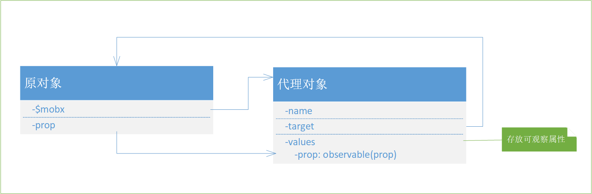
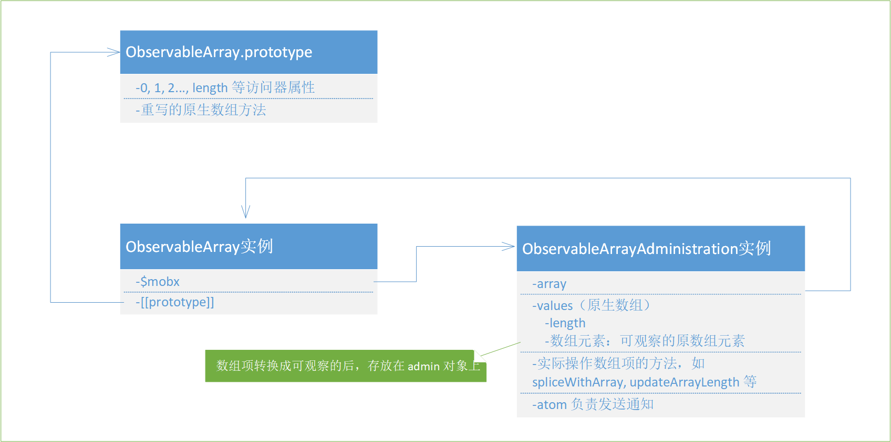
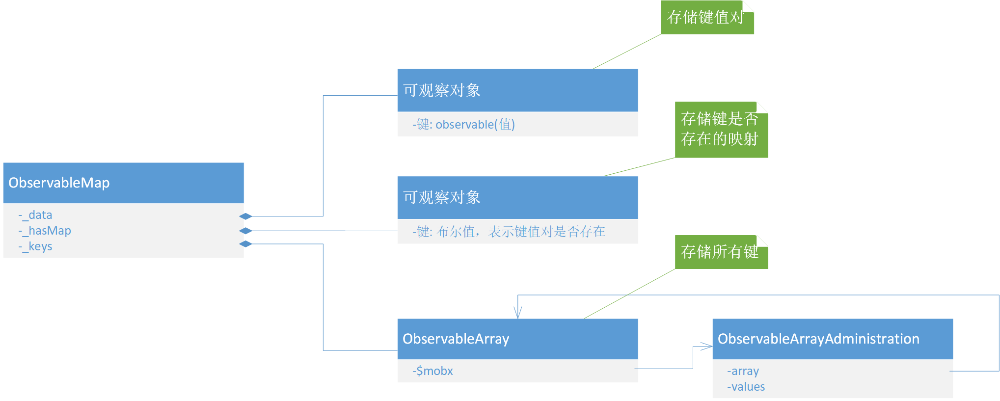

Mobx 提供了三种可观察的数据类型：对象、数组和 Map。Mobx 内部做了大量的工作，使它们的使用体验和原生 JS 类型一致，通过 observable api 包装后就可以转换成可观察值，使用时无须额外的方法调用。对于其它类型的值，Mobx 提供了 observable.box，包装之后使用其 get, set 方法来获取和设置值，也可以达到「可观察」的效果。
第一篇中提到，Observable 使用 reportObserved 和 propagateChanged 函数通知自身「被观察」和「发生变化」。将值变得可观察的关键步骤就在于触发这两个函数的调用，先来看看不同类型的 Observable 是如何实现这一点的。
如何变得「可观察」
Mobx 提供的 API observable，实际上是一个工厂函数 createObservable：
1 | function createObservable(v: any = undefined) { |
deepEnhancer 是 Mobx 默认的 Modifier（关于 Modifier 可以参看第三篇），会对对象、数组和 Map 进行处理：
1 | function deepEnhancer(v, _, name) { |
可以看到，对于其他类型的值，deepEnhancer 原样返回，从而在 createObservable 中会使用 observable.box 进行包装。先来看看最简单的 observable.box 如何使传入的值可观察。
Box
observable.box 方法简单地返回一个 ObservableValue 实例。
1 | box<T>(value?: T, name?: string): IObservableValue<T> { |
ObservableValue 实现了 get 和 set 方法，用户在使用时自行使用这两个方法获取和设置「可观察原始值」的值，那么实现「可观察」就只需在这两个方法内分别去调用 reportObserved 和 reportChanged 即可：
1 | public set(newValue: T) { |
对象
observable.object 方法将对象变为可观察的，它实际上是把对象的所有属性转换为可观察的，存放到一个代理对象上，以减少对原对象的污染：

1 | // observable.object |
asObservableObject 函数为对象创建一个「可观察对象」作为代理对象，按照源码中的命名，我们称之为「admin 对象」。admin 对象的 target 属性指向原对象，并作为隐藏属性添加到原对象上。它的实现如下：
1 | function asObservableObject(target, name?: string): ObservableObjectAdministration { |
admin 对象通过 addHiddenFinalProp 方法，作为一个隐藏属性添加到原对象上。使用 ES5 的 Object.defineProperty 定义一个不可枚举的属性即可实现：
1 | function addHiddenProp(object: any, propName: string, value: any) { |
admin 对象的 values 属性上用于存放原对象的属性，不同的是，这些属性都是经过 Enhancer 包装过的可观察属性。
接下来就是调用 extendObservable 来生成这些可观察属性：
1 | function extendObservable<A extends Object, B extends Object>( |
defineObservablePropertyFromDescriptor 函数根据属性描述符来定义可观察属性，它是一个通用的函数，后面我们还会多次看到这个函数。对于对象属性，会进入 defineObservableProperty 分支：
1 | function defineObservablePropertyFromDescriptor( |
defineObservableProperty 为对象定义可观察属性：
1 | function defineObservableProperty( |
重点来了，前面提到，ObservableValue 实现了 get 和 set 方法，对于原始值，由用户负责主动调用这两个方法，从而触发 reportObserved 和 reportChanged（实际上是在 setNewValue 方法中触发）。
那么对于可观察属性，将其包装成 ObservableValue 实例存放在 admin 对象上之后，如何触发 get 和 setNewValue 方法呢？答案是利用访问器属性，generateObservablePropConfig 为属性生成访问器属性描述符，在 get 和 set 访问器中触发相应 ObservableValue 实例的 get 和 setNewValue 方法：
1 | const observablePropertyConfigs = {} // 属性描述符缓存 |
经历完这一系列步骤后，最后返回的就是一个可观察的对象了。
还有一点需要注意的是，因为 extendObservable 中使用的是 deepEnhancer，意味着在 defineObservableProperty 函数中，实例化 ObservableValue 时，如果该属性的值是复杂对象，会递归执行「将对象转换为可观察的」过程，从而使得该属性的所有属性（或元素）也都是可观察的：
1 | // ObservableValue 的构造函数 |
数组
Mobx 实现了一个扩展的数组类型，ObservableArray，来支持数组的可观察。observable.array 方法返回一个 ObservableArray 实例：
1 | // observable.array 工厂方法 |
与对象不同的是，数组的「属性名」都是一样的，即0,1,2…这样的索引。Mobx 利用原型链，在 ObservableArray 的原型上添加 0,1,2…等访问器属性：
1 | // 记录 Observable.prototype 上访问器属性的数量 |
这样，使用索引访问 ObservableArray 实例中的元素时，顺着原型链查找到相应属性，就会调用 ObservableArray 实例的 get 和 set 方法了，同时带上相应的索引值。
Mobx 初始化时，会在 ObservableArray.prototype 上添加1000个这样的索引属性，当数组长度超过1000时，再通过 reserveArrayBuffer 函数来扩充 ObservableArray.prototype 上索引属性的数量。
也就是说，ObservableArray 实例上并没有0,1,2…等属性，那么数组项存放在哪呢？
和对象的处理类似，每一个 ObservableArray 实例都有一个对应的 ObservableArrayAdministration 实例来管理数组项，数组的每一项都会转换成「可观察的」之后，存放在 admin 对象的 values 属性上，这个属性是一个原生 JS 数组。
ObservableArray, ObservableArray.prototype, ObservableArrayAdministration 三者之间的关系如下图所示：

来看看一个可观察的数组的初始化过程：
1 | // ObservableArray 的构造函数 |
spliceWithArray 方法直接调用了 admin 对象上的同名方法：
1 | // ObservableArrayAdministration.prototype.spliceWithArray |
这样就得到了一个可观察的数组。
当我们访问数组项时，如前文所述，Observable.prototype 上的索引属性被访问，并通过 get 访问器调用 ObservableArray 实例的 get 方法：
1 | get(index: number): T | undefined { |
直接通过索引修改数组项的值时，set 访问器会调用 ObservableArray 实例的 set 方法，同样也是由 admin 对象负责数组项的更新和变化通知：
1 | set(index: number, newValue: T) { |
Mobx 中数组的 length 属性也是可观察的，原理也是一样的，都是利用原型链，在 Observable.prototype 上定义有 length 访问器属性，这里不再赘述。
为了得到类似原生数组的使用体验，ObservableArray 实现了所有原生数组的方法。来看看具体的实现方式。
对于 map, slice, toString 等不修改原数组的方法，只是在调用之前发送被观察通知：
1 | ;[ |
对于会修改原数组的方法，调用 admin 对象上的方法进行操作，比如：
1 | // ObservableArray.prototype.push |
Map
与数组的处理类似，Mobx 也实现了一个 ObservableMap 类，不过只支持字符串、数字或布尔值作为键。ObservableMap 在可观察对象的基础上，还要使键的增删可观察。它可以看做两个可观察映射和一个可观察数组的组合：

这里的可观察映射指的是属性值可观察而对象属性不可观察，相当于 ObservableObjectAdministration 的 values 属性。_data 存放键到可观察值的映射，_hasMap 存放键是否存在的映射。_keys 属性是一个 ObservableArray 实例，存放所有的键，从而使键的增删可观察。
三者配合从而得到一个可观察粒度比对象更细的 Map。例如一个使用了 get 方法的 Derivation 只观察该键值对的变化，而不会观察其它键值对的设置和增删：
1 | const map = observable(new Map()); |
来看 get 方法的实现：
1 | get(key: string): V | undefined { |
也就是说，这个 Derivation 只收集了这个键对应的值和表示是否存在该键的布尔值作为依赖，因而只对该键的值变化和该键值对的增删作出响应。
再比如使用了 keys 方法的 Derivation 只观察键值对的增删，而使用了 values 方法的 Derivation 同时观察键值对的增删和值的变化：
1 | keys(): string[] & Iterator<string> { |
发送被观察通知
接下来看看 reportObserved 是如何发送通知的：
1 | function reportObserved(observable: IObservable) { |
reportObserved 函数从全局状态中取出当前正在执行的 Derivation，把 Observable 加入其 newObserving 数组中。Derivation 执行完后，会比较新旧 observing 数组，重新计算出依赖（这部分内容可以参看第四篇）。
发送变化通知
再来看 propageteChanged 是如何发送变化通知的：
1 | function propagateChanged(observable: IObservable) { |
可以看到，propagateChanged 只是将 Observable 和它的观察者们的标志设为了过期，并没有实际执行任何的重新计算。在一个 Derivation 的依赖由最新变为过期时，会调用它的 onBecomeStale 方法。
Reaction 的 onBecomeStale 方法只是简单的调用了 schedule 方法，将该 Reaction 的更新「加入了一个计划表内」：
1 | onBecomeStale() { |
这张计划表实际上就是一个全局的数组，放置的是当前批次需要重新执行的所有 Reaction。
紧接着调用了 runReactions 函数：
1 | function runReactions() { |
这种情形下 runReactions 实际不会执行 Reaction 的重新计算，因为此时至少会处于一个事务当中，即 Observable 在调用 reportChanged 时所开始的事务。
第四篇中我们将会看到，Derivation 是如何根据 Observalbe 的通知，动态更新自身的依赖或执行重新计算的。